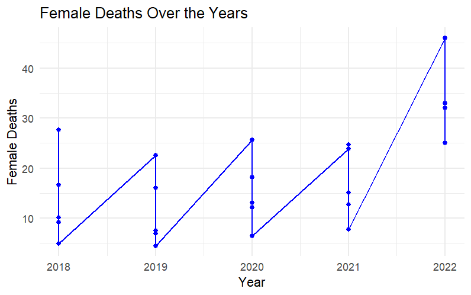
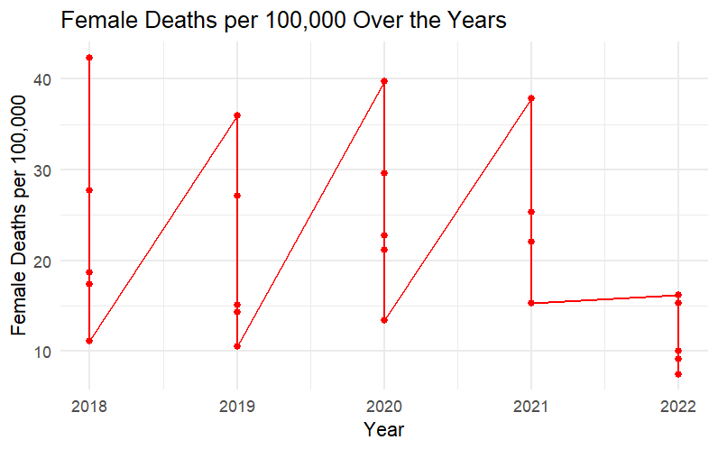

Analysis
The interactive scatter plot graph (Figure 1) provides a visually engaging representation of male mortality rates across 2018-2022 and the IMD quintiles. Its interactive features allow users to explore the data dynamically, hovering over each data point to view specific information, such as the exact number of male deaths and the corresponding year and IMD quintile. Furthermore, the ability to zoom in and out and pan across the graph enables users to focus on specific regions of interest, facilitating a more detailed examination of the data.
Across this timeframe, there appears to be a noticeable fluctuation in male mortality rates. In 2018, the number of male deaths ranged from 25 to 91 across different quintiles, with a generally decreasing trend as the IMD quintile increased. However, the data also indicates some anomalies, such as a slight increase in male deaths in the second quintile compared to the first.
Moving to 2019, the overall trend seems to continue, with male mortality rates generally decreasing as IMD quintiles increase, although with some variations. Notably, there is a significant drop in male deaths from 2018 to 2019 in the first quintile, followed by a slight increase in the second quintile.
In 2020, there is a further decrease in male mortality rates across most quintiles compared to the previous years. However, it’s essential to acknowledge that the COVID-19 pandemic emerged during this period, which could have influenced mortality trends, potentially leading to changes in health-seeking behaviour, access to healthcare services, and other factors affecting mortality rates.
In 2021, the data suggests a mixed pattern, with some quintiles experiencing a decrease in male deaths compared to 2020, while others show an increase. This variability could be attributed to a combination of factors, including ongoing effects of the pandemic, changes in socioeconomic conditions, and healthcare policies.
Finally, in 2022, there seems to be a general increase in male mortality rates across most quintiles compared to the previous year. This uptick may warrant further investigation into potential underlying causes, such as shifts in healthcare access, lifestyle factors, or broader societal influences.
Overall, the analysis highlights the dynamic nature of male mortality rates over the years, influenced by a multitude of factors that require careful consideration and ongoing monitoring to inform targeted interventions aimed at reducing mortality and improving public health outcomes.
In Figure 2, the line plot illustrates the trend of female deaths across the years from 2018 to 2022. The x-axis represents the years, while the y-axis represents the number of female deaths. Each line on the plot corresponds to a specific IMD quintile, with higher quintiles indicating lower socioeconomic status. The plot utilises clear labelling, with the x-axis labelled as “Year” and the y-axis labelled as “Female Deaths.” This labelling enhances the interpretability of the graph, allowing viewers to easily understand the variables being depicted.
Analysis of the plot reveals variability in the number of female deaths over the study period. In 2018, the plot displays a range of female mortality rates across different IMD quintiles, with higher quintiles generally associated with lower mortality rates. Notable deviations from this trend are observed, particularly in the second and third quintiles, where female mortality rates are relatively higher compared to adjacent quintiles.
As we progress through the years, patterns emerge. In 2019, there is a slight decrease in female mortality rates across most quintiles compared to the previous year, suggesting potential improvements in health outcomes. This downward trend continues into 2020, with further reductions observed in female deaths across different socioeconomic strata.
However, in 2021, the plot reveals a mixed pattern, with some quintiles experiencing a decline in female mortality rates compared to 2020, while others show an increase. This variability underscores the complex interplay of factors influencing female mortality, including socioeconomic status, healthcare access, and underlying health conditions.
Finally, in 2022, there appears to be a general increase in female mortality rates across most quintiles compared to the previous year. This upward trend may warrant closer examination to identify potential underlying causes and inform targeted interventions aimed at reducing female mortality and improving public health outcomes.
Figure 3 depicts female deaths per 100,000 population over the years from 2018 to 2022. Similar to the first graph, the x-axis represents the years, while the y-axis represents the number of female deaths per 100,000 population. Again, each line on the plot corresponds to a specific IMD quintile, with higher quintiles indicating lower socioeconomic status. The plot employs clear labelling, with the x-axis labelled as “Year” and the y-axis labelled as “Female Deaths per 100,000.” This labelling facilitates comprehension of the variables being represented.
Analysis of the plot reveals fluctuations in female mortality rates per 100,000 population over the study period. Similar to the graph of female deaths, there is variability across different IMD quintiles, with higher quintiles generally associated with higher mortality rates. However, deviations from this trend are observed, particularly in the second and third quintiles, where female mortality rates per 100,000 population may be relatively higher compared to adjacent quintiles.
Overall, both graphs provide valuable insights into female mortality trends over time, highlighting the dynamic nature of female health outcomes and the importance of considering socioeconomic factors in public health interventions aimed at reducing mortality rates and improving overall well-being.

In conclusion, the analysis of female and male mortality trends reveals nuanced patterns and variations over the years. While both genders exhibit fluctuations in mortality rates across different socioeconomic strata, there are notable differences in the magnitude and trajectory of these trends. Female mortality rates, while generally lower compared to males, display distinct patterns influenced by factors such as socioeconomic status, healthcare access, and underlying health conditions. Conversely, male mortality rates tend to exhibit greater variability and may be influenced by additional factors such as occupational hazards and lifestyle choices. Overall, understanding the complex interplay of these factors is essential for informing targeted interventions aimed at reducing mortality rates and improving public health outcomes for both genders.